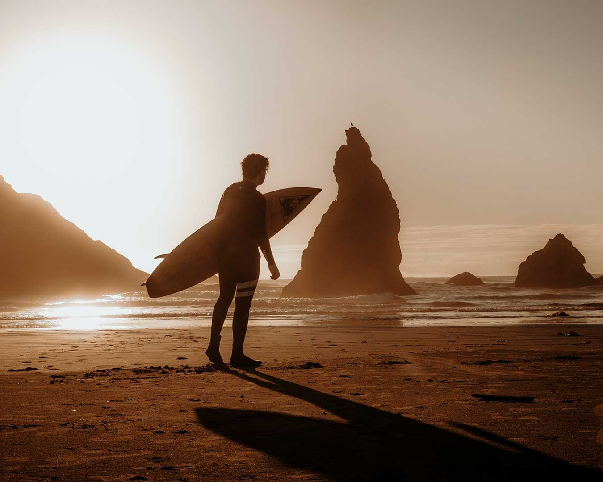

La Glisse a été inspirée en partie par un événement triste. Un surfeur, père et gardien du spot principal où nous enseignons est décédé et a laissé un vide dans le spot de surf appelé Publics. La pensée que la famille de ce surfeur ne se sente pas aussi à l'aise dans le surf sans sa force et sa connaissance de l'océan a créé une profonde empathie dans le cœur des membres fondateurs du projet La Glisse. Bob Labrise, copropriétaire et co-fondateur de La Glisse ne pouvait pas supporter l'idée que si quelque chose lui arrivait, ses propres enfants ne se sentiraient peut-être pas à l'aise de retourner sur le surf. C'est devenu sa devise qu'aucun enfant ne doit être laissé pour compte quand il s'agit de surf. Ainsi, à La Glisse, nous pagayons tous les jours dans le but de permettre au plus grand nombre de personnes de découvrir l'océan et le surf de manière sûre, inspirante, stimulante, revigorante et amusante.
Certains voient l'activité du surf comme un moyen de gagner facilement de l'argent, mais nous le voyons différemment. Nous y voyons un moyen de donner accès à l'océan au plus grand nombre possible tout en offrant à notre personnel des emplois professionnels en tant que coach et guides de surf. Vous pouvez embaucher à peu près n'importe quel vieux surfeur ou enfant à la recherche d'un emploi à temps partiel ou d'été en tant que main-d'œuvre bon marché, puis facturer des cours aux gens et leur donner en retour une expérience passable ou à peine décente dans l'eau. Ou vous pouvez, comme le fait La Glisse, embaucher des professionnels et leur offrir une carrière et un salaire dont ils peuvent être fiers de savoir qu'à leur tour, ils offriront à vos clients bien plus qu'une simple leçon de surf. Pour rendre le surf accessible à tous les âges et à tous les niveaux, nos instructeurs travaillent et font du bénévolat avec la Fondation Go Found Yoursel. Cela fait partie de notre engagement à rendre chaque expérience sûre, mémorable et amusante pour tous ceux qui viennent chez nous.